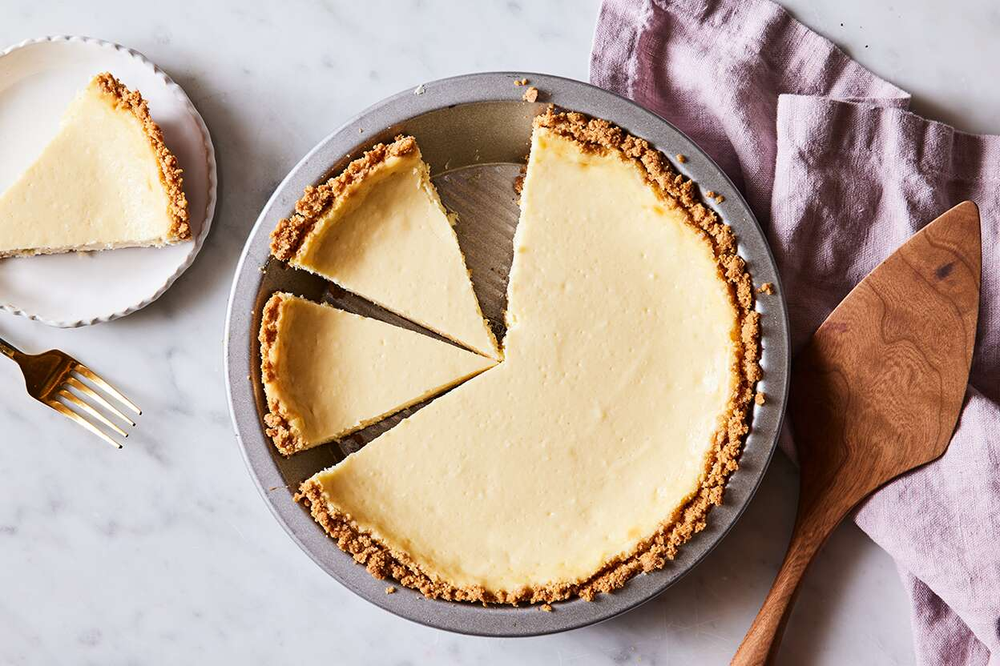

Homepage
Cheesecake Recipe

Description
It doesn't get any easier than this for a delectable mouth-watering dessert!
The only way I see this getting any better is if it were a chocolate cheese cake...
This is a dish I favor over any tradditional cake for birthdays or holidays, hands down.
Not only does this cheesecake taste delicious, it's also low effort and beginner friendly.
Plus if you find it too hard to make the crust, you can always buy the crust pre-made
(That's what we're doing here). I'm sure you're up for the challenge though, so let's begin!
Ingredients For Filling
- 3 eggs
- 2 8oz packets of cream cheese
- 2/3 cups of sugar
- All the juice of a small lemon
Ingredients For Topping
- 2 tbsp sugar
- 1 cup sour cream
- 1 tspn vanilla extract
Instructions
-
Filling
- Beat sugar with softened cream cheese
- Add eggs and beat until smooth
- Add lemon juice and mix
- Bake in grahm cracker crust at 350 °F for 45-60 min
- Check for doneness with toothpick
- Let cool for 15 min
-
Topping
- Mix all ingredients
- Spread on top of cheesecake
-
If the cheesecake has formed a ridge along the outside of cake, I like to slice it down
until it's level with the center. That way, the top is completely smooth and the topping
is spread evenely. Plus you get to eat the extra crust!
Conclusion
Just remember, take your time, don't worry about failure,
that's how we learn. And if you ever feel lost, Google most
likely has the answer! So good luck! And as always, stay frosty!